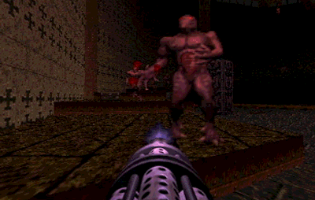
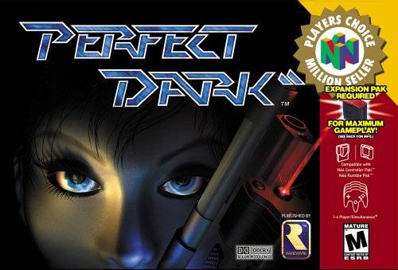
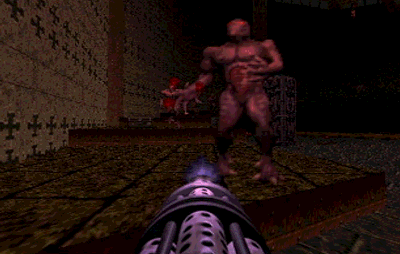
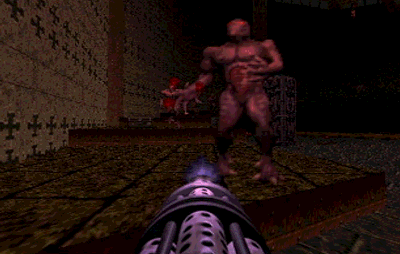
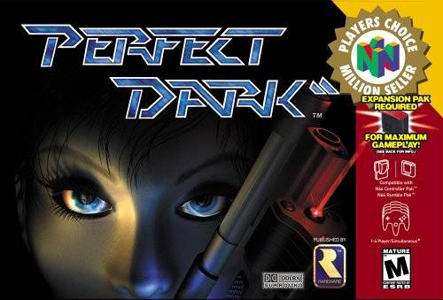
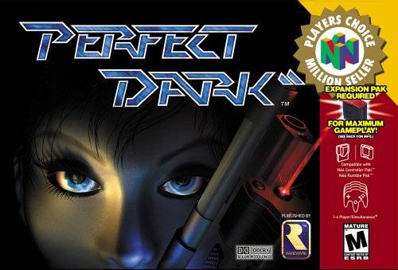

Doom 64 is a first-person shooter video game for the Nintendo 64 that was developed and published by Midway Games on March 31, 1997. It is a sequel to the Doom series, taking place after Doom II.
More like this


 



 
